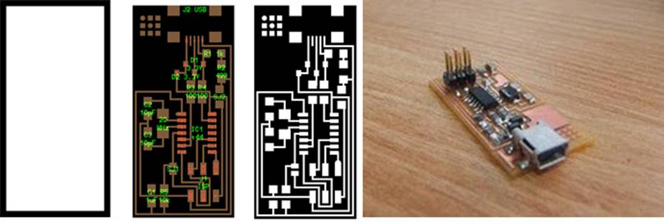
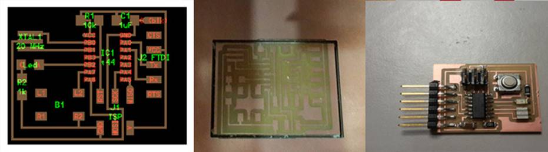
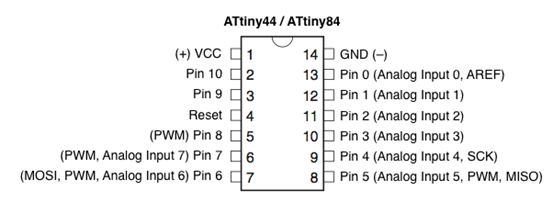
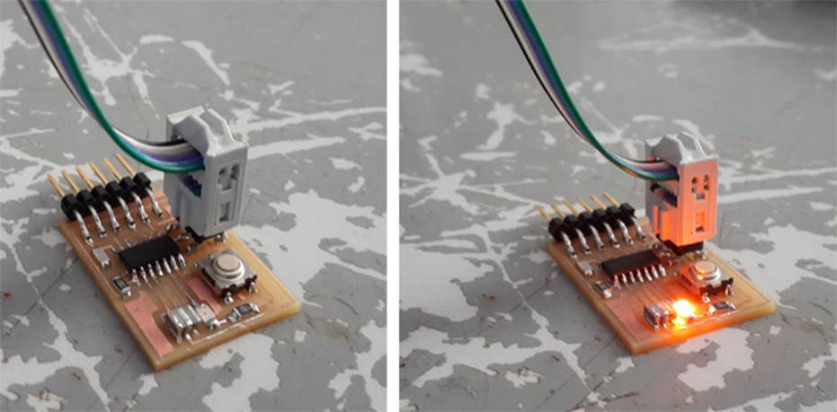
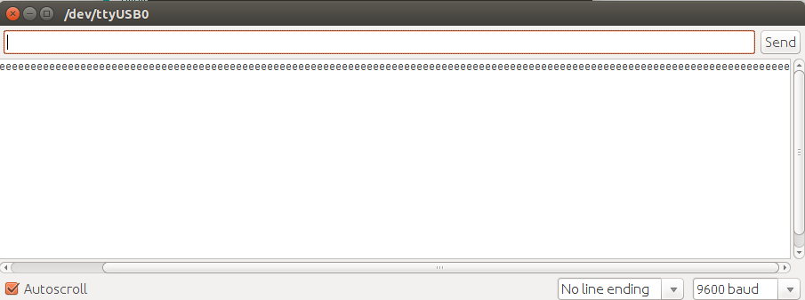

WEEK 3 : Electronics
Production Week
“Electronics is not for the Weak”
Electronics
Production
This week we learn about designing, meticulously milling, soldering
and later programming a circuit.
DAY 1
The first assignment was to make a FAB ISP. The FabISP is an in-system programmer for AVR microcontrollers,
designed for production within a Fablab.
The design files are available for download in the Fab Academy
page here(http://fabacademy.org/archives/2015/doc/electronics_production_FabISP.html)
We downloaded the following designs:
http://fab.cba.mit.edu/content/projects/fabisp/fabisp.png
{kind=link}
http://fab.cba.mit.edu/content/projects/fabisp/fabispdim.png
{kind=link}
NOTE : Always make sure the copper
side of the board is not touched with the fingers, it might cause oxidization.
First place a copper board and stick it with double sided
tape straight and strongly onto the milling board, this is the sacrificial
layer. On top of this layer, stick the next layer that is to be milled.
After giving the command on Kokopelli
(Traces) the circuit may be milled using the 1/32 cm size bit. Once milling is
done, use the 1/62 cm bit to cut the circuit board out. Since the circuit board
is stuck strongly due to the double-sided tape, it is good to use a thing
strong object like steel measuring scale or a thin screwdriver. Then we moved
on to my favorite part, soldering the circuit.
As a standard practice, Franc said while assembling the
components before soldering, it is good to write the component name on a blank
piece of paper, circle it and place the components on the respective circles.
Franc also explain when smart boys solder they:
·
Use eye loupes for better visibility
·
Have amazing lighting as if for a photo-shoot
·
Fixate the corner legs and then later the others
·
Hold the component still with one hand when
soldering

NOTE : Bubble free - And also, while placing the copper
board, on has to make sure it is stuck with double sided tape properly onto the
sacrificial layer. If there are any air bubbles on it, make sure it is pushed
out or so, else the board would not be straight and milling will be distorted.
This will cause in improper milling of the circuit and the bit might only
scrape thru the top layer of the board.
Once the circuit is milled.
DAY 2
Franc started off the day us a basic walk thru about
essential components and uses for anyone who intends to tinker with
electronics. The following were discussed:
Switch
A switch responds to an external force to mechanically change an
electric signal. Switches are used to turn electric circuits ON and OFF and to
switch electric circuits. Basically what this means is that when you push down
or flick a switch you are allowing current to flow through to the rest of the circuit.We have
many different kinds of switches the most common are Toggle Switch, Push button
Switch, Selector Switch
Diode
A diode is a specialized electronic component with two
electrodes called the anode and the cathode. Most diodes are made with
semiconductor materials such as silicon, germanium, or selenium. Some diodes
are comprised of metal electrodes in a chamber evacuated or filled with a pure
elemental gas at low pressure. Diodes can be used as rectifiers, signal limiters,
voltage regulators, switches, signal modulators, signal mixers, signal
demodulators, and oscillators.
Light Emitting Diode: The LED converts current into light. This
type of diode is especially popular and is most commonly found in small
electronics stop street lights and we may even see it finding its way into
house lighting being cheaper and more Eco friendly.
Resistor
A resistor is a passive two-terminal electrical component
that implements electrical resistance as a circuit element. Resistors act to
reduce current flow, and, at the same time, act to lower voltage levels within
circuits.
Capacitor
A capacitor (originally known as a condenser) is a passive
two-terminal electrical component used to store electrical energy temporarily
in an electric field.
Transistor
A transistor is a semiconductor device used to amplify or
switch electronic signals and electrical power. It is composed of semiconductor
material with at least three terminals for connection to an external circuit.
Potentiometer
A potentiometer, informally a pot, is a
three-terminal resistor with a sliding or rotating contact that forms an
adjustable voltage divider. If only two terminals are used, one end and the
wiper, it acts as a variable resistor or rheostat.
Motors
An electric motor is an electrical machine that converts
electrical energy into mechanical energy.
Microcontroller
A microcontroller is a small
computer (SoC) on a single integrated circuit
containing a processor core, memory, and programmable input/output peripherals.
Program memory in the form of Ferroelectric RAM, NOR flash or OTP ROM is also
often included on chip, as well as a typically small amount of RAM
After this session, milling and soldering of FABISP was
done.
DAY 3
Electronics design using
Kokopelli
We learnt how to design our own circuits. Firstly we
downloaded a standard circuit from the Fab Academy website and then further
went on the modify it by varying and writing
additional lines of code to further add 3 components:
·
LED
·
Resistor
·
Button switch

Modified Kokopelli Design -> Milled Board
-> Final Board
Clean Up !!
Franc also asked me to clean up the Modela
machine from all the wax milling that was being done. He also explained to us
how we should collect, reuse and recycle the wax leftovers from milling the machinable wax. This machinable
wax that was available here at the Fablab was dark
blue in colour, and of a lower quality and might be
prone to melting (while milling). In fact while melting and reusing the wax, to
improve the quality, one can add HDPE, reusable polythene. HDPE is usually used
in the plastic covers we get in stores.
Use fab modules to mill the board.
DAY 4
Embedded Programming
Today’s lesson is on Embedded
programming. Embedded systems programming is the programming of an embedded
system in some device using the permitted programming interfaces provided by
that system. Embedded Java is an example of a development environment for
programming embedded systems that will execute Java programs. Our tutor, Franc
spoke to us about the different levels of programming languages
: High level languages, Mid Level Languages
(C, C++), Low level languages (Assembly language). C is the most commonly used
language in programming and C also remains a very popular language for
micro-controller developers due to the code efficiency and reduced overhead and
development time of the language. C offers low-level control and is considered
more readable than assembly.
Programming Hello
FTDI

We had already milled & soldered a Hello World board.
Next step is to program the same. To program we require :
·
The Fab ISP
·
A mini USB cable
·
FTDI header cable &
·
Of course, our HELLO WORLD Circuit
Next step is to connect our laptop & the ISP using the
mini USB cable and connect Hello World to our ISP(being
wary of the orientation). Next is to run
Arduino as Root(sudo./arduino @ terminal), assuming the ATTiny
libraries have already been adeed. Select Tools Menu
Board->as ATTiny and Processor->ATTiny44 and
Programmer->usbtinyisp.
Now to load the blink code to the board. All we need to do
is set the LED pin as PIN 8 (since we have connected the LED there on the board
and compile the program and upload : Voila : *blinks*

Serial communication
(send something to computer, read something from computer)
In serial communication we use FTDI header to communicate
with our Computer. The FTDI header have 6 Pins and the other end is USB with
which we connect it to our Laptop.
Generally we use SoftwareSerial
headers for serial communication. So we need to include the library in our
program to enable serial communication. We wrote a program for turning on LED
connected to pin 8 when we send character "c" from Laptop and send
character "e" back when we press the button on the board.
Program code
Now connecting the board to FAB ISP and the FTDI header to the
board and next connect the other end to Laptop. Burn the program to the board
using ARDUINO. On completion, open the Serial monitor window and press the
button in the board.
Serial monitor pic

DAY 5
Video Conferencing
and Catching up